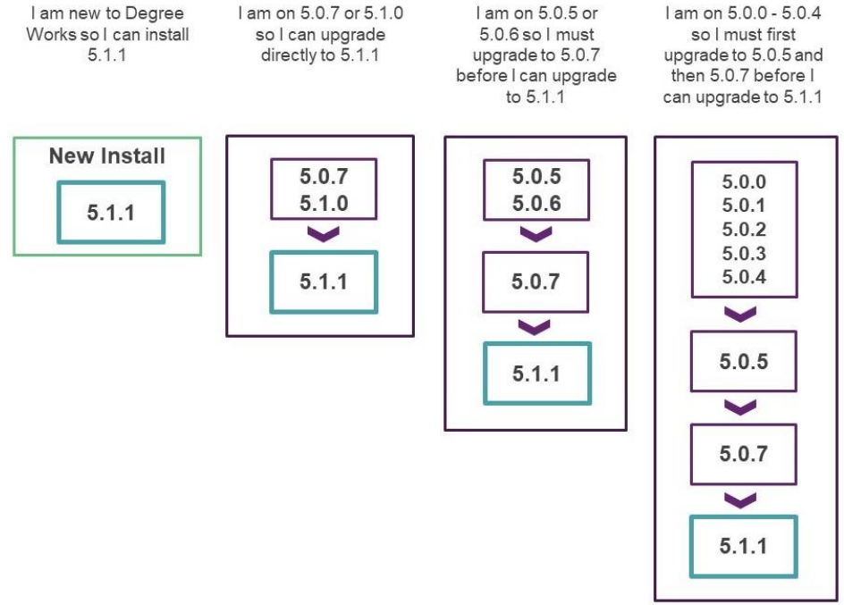

Release 5.1.1
Degree Works 5.1.1 includes new functionality, improves existing functionality, resolves change requests, and more.
General
Overview
The central themes of Release 5.1.1 include expanding the functionality offered in the Responsive Dashboard to meet the needs of the client base as they move to this and enhancements to support Degree Works as a SaaS solution. Release 5.1.1 also meets customer satisfaction goals by delivering 20 improvements and 76 problem resolutions.
This release is a MINOR release so the version has been assigned as Release 5.1.1 and it will build on the baseline established by the previous MAJOR release, Release 5.1.0, and subsequent releases. This is still a significant release in terms of the product direction, and it continues to build on the infrastructure introduced for Cloud delivery.
Upgrade path
The Degree Works Release 5.1.1 supports a new installation or a direct upgrade path for existing customers currently on Release 5.0.7 or Release 5.1.0.

With the release of Release 5.1.1, Release 5.0.7 and Release 5.1.0 are in Maintenance Support, while Releases 5.0.0 – 5.0.6 are in Sustaining Support. Details about Ellucian Support Assurance can be found in article number 000038478.
All Degree Works versions before 5.0.0 are in End of Support as of January 1, 2021. If you are on a 4.x version of Degree Works, you must upgrade to at least Release 5.0.7 to process Release 5.1.1.
We encourage customers to stay current with releases so multiple jumps are not required when processing a new release upgrade.
If you are on any service pack level, the upgrade path you should follow is from your base release as service packs are included in the next release. For example, if you are on 5.1.0.2 you would follow the path of upgrading from Release 5.1.0 to Release 5.1.1.
Hardware and software requirements
Supported hardware architectures and associated operating systems
- Intel-based x86 running Red Hat Enterprise Linux 7.x or 8.x (64-bit)
- Intel-based x86 running Oracle Linux Server 7.x or 8.x (64-bit)
- Intel-based x86 running Red Hat Enterprise Linux 7.x or 8.x (64-bit)
- Intel-based x86 running Oracle Linux Server 7.x or 8.x (64-bit)
- IBM running AIX 7.x (64-bit)
- Sun SPARC platform running Solaris 11 (64-bit)
- HP Integrity Platform (IA64) running HP-UX 11.x (64-bit)
Supported RDBMS
Degree Works Release 5.1.1 supports Oracle 19c.
Supported browsers
Ellucian makes every effort to test and support the current versions of the following browsers at the time of a release:
- Google Chrome
- Mozilla Firefox
- Apple Safari
- Microsoft Edge
For additional information, please review the Ellucian Global Web Browser Support Policy and Matrix.
RabbitMQ
Degree Works Release 5.1.1 supports the following versions:
- RabbitMQ server v3.9
- RabbitMQ client v0.10.0 or v0.11.0
Java
Degree Works Release 5.1.1 requires Oracle Java Development Kit (JDK) or OpenJDK version 11 on both your classic and application servers.
GCC Compiler
Degree Works 5.1. supports GCC versions 4.8.x and 8.x. For upgrading clients GCC version 6.3.0 on AIX is also supported.
Apache FOP
Degree Works requires Apache FOP version 2.6 on the classic server.
OpenSSL
Degree Works requires OpenSSL, including the openssl-devel package.
base64
Degree Works requires the base64 program on the classic server. This is typically included in a standard Linux installation but may need to be installed separately on servers with other operating systems.
For more details on all hardware and software requirements, see Degree Works Installation.
Enhancements
Audit highlights
Store audit results as a BLOB in the database for improved performance
A new database table, DAP_AUDIT_TREE, has been added that allows for the body of the audit to be stored in a single BLOB rather than in multiple DAP_AUDTREE_DTL records. This can reduce the amount of time it takes to read from the database when the audit is being viewed and to write to the database when new audits are generated.
The DAP_AUDIT_DTL remains the parent table for the DAP_AUDTREE_DTL in addition to the DAP_AUDIT_TREE. The DW_AUDIT_BLOB environment variable controls to which child table the audit body is written. By default, the DAP_AUDTREE_DTL will be used; setting DW_AUDIT_BLOB to 1 in dwenv.config will enable the new DAP_AUDIT_TREE functionality.
False evaluation for IF Statements in Header when based on a class whose discipline is not used in block rules
When using IF statements in the header based on a course (for example, If (ACCT 1100 is FOUND) Then), when there are no requirements in any rules in the block referencing courses of the same discipline, the IF statement will now resolve to true if the student has taken that course.
Max qualifiers may not be enforced when group rules are used and classes are reapplied from fall-through
The MaxCredits, MaxClasses, and MaxPerDisc qualifiers on group rules are now being rechecked when classes are reapplied to groups after being initially placed in fall-through.
Limit audit JSON/XML output based on RPT036 flags to improve performance
A new Shepherd setting, core.audit.view.reduceAuditTree.enabled, has been added to control the amount of JSON or XML output created when generating audits. When set to true, only the data that will be used in formatting the results as indicated by the UCX-RPT036 flags for that audit format will be output to the JSON or XML, limiting its size and the time spent in producing and transmitting audits. By default, core.audit.view.reduceAuditTree.enabled is delivered set to false.
Authentication highlights
SSO login fails silently if shp_access_code is null
Single sign-on to Degree Works applications will now be successful with a user having a NULL SHP_ACCESS_CODE value in the SHP_USER_MST table. Previously the single sign-on request would fail even though SSO does not authenticate against this password.
Degree Works needs to allow for more secure SAML signature hash algorithms like SHA-256
- core.security.saml.assertionConsumerUrl
- core.security.saml.entityId
- core.security.saml.metadata.identityProviderUrl
During the upgrade process, existing SAML configurations will be converted into these new settings and you should see no disruption to your authentication process if you use SAML. Note that there are several other changes in the SAML implementation. For more information, see the SAML single sign-on and sign-off topic.
Add ability to send a SAML2 single logout (SLO) request
By default, when users log off, a DegreeWorks application, they are able to access that application and others again without re-authenticating, because Degree Works does not log them off of the central identity provider. Single sign-off from all applications when logging out of a Degree Works application can be enabled by changing the core.security.singleSignoutEnabled Shepherd setting to true. A logout request assertion will be sent to the identity provider to log out the user and they will then not be able to run a Degree Works application nor any other application authenticated by that provider on that browser session. For more information, see the SAML single sign-on and sign-off topic.
Banner highlights
Controller highlights
Change the newdash Shepherd setting specification to dashboard
The following obsolete Shepherd setting specifications have been removed from Controller - gateway, scribe, shell, and TransferFinder. Also, the specification for Responsive Dashboard application has been changed from newdash to dashboard. As part of the update, any existing Shepherd settings with a newdash specification will be changed to dashboard.
RabbitMQ highlights
Enable verification of peer certificates when using RabbitMQ SSL
You can now enable peer certificate verification with the RabbitMQ SSL implementation. Two new environment variables have been added for this - AMQP_VALIDATE_PEER_CERTIFICATE and AMQP_SERVER_CA_CERTIFICATE_PATH. To enable peer verification, the AMQP_VALIDATE_PEER_CERTIFICATE variable should be set to 1 and the AMQP_SERVER_CA_CERTIFICATE_PATH variable should be set to the path of the CA certificate in the classic server's dwenv.config file.
Responsive Dashboard highlights
Control Student Header Information by user class
The display of custom data in the student header can now be configured by user class so that advisors can view data that is not visible to the student. By creating additional Shepherd settings for dash.studentHeader.custom.items/dash.worksheets.custom.items/core.audit.printView.studentHeader.custom.items with a user class appended, these custom data items will be shown only to users with this user class, in addition to the links defined in the base dash.studentHeader.custom.items/ dash.worksheets.custom.items/core.audit.printView.studentHeader.custom.items settings. This functionality is available in the Responsive Dashboard in addition to PDF audits generated through the dashboard or in batch through Transit.
Implement access by user class to Links
You can now create additional settings for dash.navigation.links.items with a user class suffix. Users in the user class will get these links in addition to those in the standard dash.navigation.links.items setting. This allows you to have different links for different user classes. Furthermore, you can add a student ID and degree parameter in the link URL property to pass the student's ID and degree to one of your APIs.
SEP: Display plan total credit count
In the plan header, the total number of planned credits now displays. This is the sum of the term total credits (total class requirement credits plus minimum credits on choice requirements, if specified).
SEP: Control if a user can modify the Active flag on a plan
User access to modify the Active flag on a plan can now be managed with the SEPPACTV Shepherd key. If users have this key, they will be able to change the Active flag on a plan. For users without this key, the Active flag will be display only.
Show date modified hover display on Notes
Hovering over the Created on field of an audit, planner, or template note will now tell you either the time the note was created or the modification date and time and name of the modifier, if the note was modified.
SEP: Add pagination navigation arrows to Courses sidebar in Plans and Template Management and for wildcards and ranges in the Plans Still Needed sidebar
For disciplines that have more than 10 courses in the Courses sidebar in Plans and Templates, and for wildcards and ranges with more than 10 courses in the Still Needed sidebar in Plans, forward and backward pagination arrows have been added to allow the user to more easily navigate the results pages.
Localized property dash.home.context.levelFormat.none is not working
When the student's classification is blank on the goal record, the dashboard will now honor the localized property dash.home.context.levelFormat.none so that you will see Classification (none) in the student header. This appears to have been fixed indirectly by changes made in the 5.1.0 release.
Error trying to expand approved petition and load student's audit - "There was an error loading a worksheet. Cannot read properties of undefined (reading 'date')"
The latest audit now properly displays when applying exceptions to an audit in Exception Management, even when accessed before retrieving any students.
SEP: When adding a course that has rad_credits with a decimal (such as 0.5), the credits after the decimal get dropped when added to the plan.
When adding a course that has credits with a decimal (such as 0.5), credits are no longer dropped when adding Course Requirements through the sidebar.
Scribe highlights
Run a new audit when changes to the Scribe blocks are detected
A new Shepherd setting, core.audit.process.runOnScribeChanges.enabled, has been added to allow new audits to be automatically generated when changes to Scribe blocks are detected. When this setting is true, a new audit will be generated if any of the audit's blocks have changed from when the audit was created when a user is viewing an audit. This also occurs when creating a PDF from the most recent audit or using DAP22 to create CPA data from the most recent audit.
Scribe parse/save routine should catch invalid characters
When parsing blocks using the parse, save, or save as actions in Scribe, the block text will first be checked for invalid characters typically caused by copying and pasting from Word, PDF, or other external documents. The user will need to first correct the invalid characters before being able to parse and save a block.
Allow Scribe editor length to be responsive to the browser window
The height of the Scribe editor is now responsive to the browser viewport height, allowing a maximum display of the block text.
Transit highlights
DAP22/DAP27/DAP28 taking a long time to run large batches
The performance issue with launching DAP22, DAP27, or DAP28 with more than 1,000 students has been fixed.
Create process to periodically clean up old jobs
Transit now has a job cleanup scheduler to perform database cleanup. By default, this is scheduled to run twice a day and jobs older than 14 days will be deleted. You can alter the default scheduling using the environment variable TRANSIT_CLEANUP_SCHEDULER and alter the age of the jobs to be deleted in the Shepherd settings transit.cleanup.completed.maxDays (for DONE, FAILED, or TERMINATED jobs) and transit.cleanup.incomplete.maxDays (for PENDING, RUNNING, or CLEANUP jobs).
Additionally, you can also enable/disable the cleanup of unused input files. That is, entries in the TRANSIT_INPUT table that have a null TRANSIT_JOB_ID using the environment variable TRANSIT_CLEANUP_INPUT_ENABLED, which is enabled by default.
Show a FAILED job instance status in Transit when a job fails instead of DONE
The job status showing in Transit is now always set based on the job's exit code. Previously, the status in the Manage Jobs tab would show as Done if a job successfully launched in Transit but ultimately was unsuccessful due to errors in the job itself. Now the Manage Jobs status will be Failed, letting the user know they should review the log files for additional information.
tbestop should ignore port when url is set
The tbestop command has been changed to ignore the value of the TRANSIT_EXECUTOR_PORT environment variable when the TRANSIT_EXECUTOR_URL environment variable is set. Instead, the port should be included in the TRANSIT_EXECUTOR_URL environment value, if necessary.
What-If highlights
After running CPOS or What-if API for a student, academic audit is run but only saved if the CPOS/What-if audit itself is saved
When a What-If API request is made (for example, from CPOS), and the student's data is refreshed from Banner, the newly run academic audit is now properly saved to the database even if the What-If audit is not being saved.
Missing UCX entries causing What-If to endlessly spin - Uncaught (in promise) TypeError: Cannot read property 'minors' of undefined
When a drop-down for a goal item in What-If has no entries in its corresponding UCX table, this will no longer prevent the What-If from working.
Add individual catalog year options for What-If choices
When the new Shepherd setting core.whatIf.enableGoalCatalogYear is true, a catalog year for each of the goal items in the What-if Areas of Study and the Additional Areas of Study in Responsive Dashboard can be selected, allowing for different curriculum for these items based on catalog year.
Updates
Database changes
There are several database changes in Release 5.1.1.
For non-Banner sites, several of these changes also impact BIF record layouts. You should now use R702ETSM instead of R701ETSM, R083TRAN instead of R082TRAN, R201TREQ instead of R200TREQ, R652MAPD instead of R651MAPD, and R658MAPC instead of R655MAPC. Please review the layout changes in the documentation and modify your extract as needed.
- DAP_MAP_COND_DTL
- DAP_MAPPING_DTL
- DAP_TRANSFER_DTL
- RAD_ETS_CODE
- RAD_ETS_DOE
- RAD_ETS_FICE
- RAD_ETS_TAX_ID
- RAD_ETS_USER
The RAD_TR_ETS field on the RAD_TRANSFER_DTL was increased from 10 bytes to 20 bytes.
- TRF_IMPORT_SCHOOL
- TRF_SELF_REPORTED_CLASS
- DAP_RESCLASS_DTL
- DAP_MAPPING_DTL
The RAD_ETS_SCHOOL field on the RAD_ETS_MST was increased from 30 bytes to 100 bytes.
The RAD_TR_NAME field on the RAD_TRANSFER_DTL was increased from 30 bytes to 100 bytes.
The SESSION_ID field was added to the TOKEN_REVOCATION_MST.
- DAP_AUDIT_TREE
- SHP_SESSION
- DAP_COLLEGE_DTL
- DAP_TITLE_DTL
- SHP_SERVICE_MST
- UCX_STU351
- UCX_STU362
- UCX_STU379
- UCX_STU380
- UCX_STU382
- UCX_SYS910
- UCX_SYS942
- UCX_SYS978
- UCX_SYS987
Documentation
As of Release 5.1.1, Degree Works documentation shifted publication from the Documentation Libraries to the Ellucian Documentation site. Instead of posting installation, release, administration, technical, and user guides as PDFs to the Customer Center, the content is now available through the Ellucian Documentation site where it can be viewed interactively and, if desired, can be exported in total or by topic. A login for the Customer Center will be required to access the entire suite of documentation.
In addition, online help for all Degree Works applications except Transfer Equivalency Self-Service has moved to the Ellucian Documentation site under the Use category to ensure that it is always up-to-date and accessible. The Use category is available to all users, including those without a Customer Center login. Transfer Equivalency Self-Service will continue to have online help built in because the target audience for this application is a prospective student.
You are able to find Degree Works documentation in the Customer Center under Resources > Documentation > Degree Works.
Degree Works API documentation continues to be available in the Customer Center under Resources > Documentation > Find APIs.
Degree Works 5.1.1 Service Pack 1
This patch corrects defects reported with Degree Works Release 5.1.1.
Click Attachments  on the side panel to download the service pack general information and instructions.
on the side panel to download the service pack general information and instructions.
Degree Works 5.1.1 Service Pack 2
This patch corrects defects reported with Degree Works Release 5.1.1.
Click Attachments on the side panel to download the service pack general information and instructions.